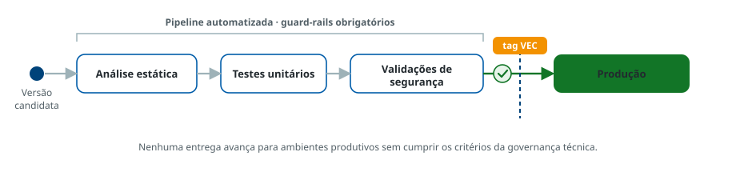

1
Prática Desejada
Versões promovidas para produção devem ser efetivamente testadas e validadas
Regra
Somente versões que passaram por validações técnicas, testes de qualidade e segurança devem ser liberadas para ambientes produtivos. Cada versão deve ser identificável, condicionada e rastreável em todo o seu ciclo de desenvolvimento.
O que a prática exige
- O time deve usar o versionamento de forma padronizada — tags institucionais, nomenclaturas consistentes e SemVer — vinculando cada versão ao seu contexto de desenvolvimento, testes e aprovação.
- A integração contínua deve ser acompanhada por pipelines automatizadas com verificações obrigatórias: análise estática de código, testes unitários e validações de segurança.
- Esses guard-rails garantem que nenhuma entrega avance para ambientes críticos sem cumprir os critérios da governança técnica.
- A gestão de branches deve seguir GitFlow ou GitHub Flow, conforme definido institucionalmente.
- As equipes de suporte devem atuar como facilitadoras, instrumentalizando os times com métodos, ferramentas e templates.
Validação até a produção
FiguraGuard-rails da pipeline

Referências metodológicas
Espaço reservado para os links institucionais sobre este assunto.